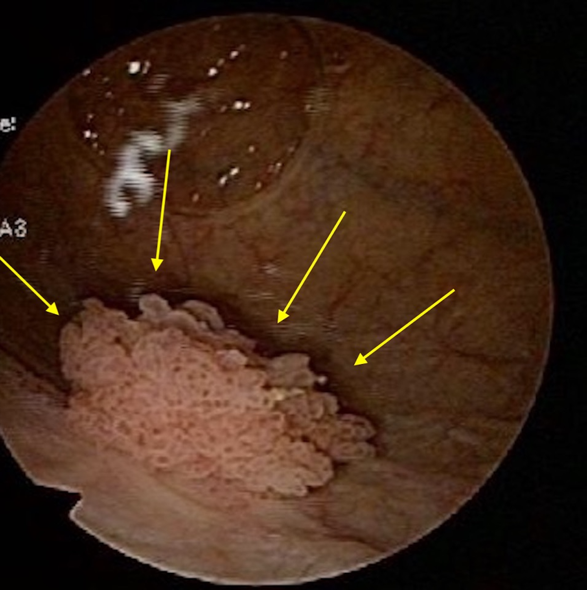

Uma perda urinária “inocente”, hematúria que “deve ser infecção” — e por baixo, um câncer de bexiga esperando o médico atribuir tudo à ITU.
O diagnóstico é clínico: anamnese + exame físico (e a manobra provocativa)
Vale repetir, porque é o eixo de toda a conduta: o diagnóstico da incontinência é praticamente clínico — anamnese e exame físico definem. Muitas vezes, ali na frente, pede-se à paciente que tussa (a manobra provocativa) e ela perde: pronto, já se viu a perda por esforço, sem precisar de mais nada. O exame não é acessório; frequentemente ele fecha o diagnóstico.
Exames básicos: EAS + urocultura para excluir infecção
Os exames que valem a pena de rotina — sobretudo na bexiga hiperativa, que confunde mais — são o EAS (urina tipo 1 / sumário de urina) e a urocultura. O objetivo é excluir infecção, porque a infecção urinária é causa de incontinência, de urgência e de polaciúria: uma ITU pode mimetizar perfeitamente uma bexiga hiperativa. Antes de rotular a paciente, exclua a ITU.
Hematúria com urocultura normal pode ser doença renal
Aqui começa a lente do ginecologista como médico do todo. O ginecologista não pode se limitar a útero, trompa, ovário e mama — avalia a paciente inteira, e o exame de urina pode revelar outros diagnósticos. Hematúria (sangue na urina) com urocultura normal pode ser doença renal — vale procurar cilindros no sedimento. Na maioria das vezes, porém, a hematúria é por infecção: se a urocultura for positiva, trata-se a ITU. É a bifurcação que prepara o red flag.
RED FLAG: > 50 anos + tabagista + hematúria sem ITU → cistoscopia
Este é o ponto que salva vidas e derruba candidatos. Mulher com mais de 50 anos + tabagista + hematúria sem ITU → não atribuir à infecção; fazer cistoscopia, pensando em neoplasia de bexiga. Uma perda de urina aparentemente “inocente” pode esconder um câncer de bexiga. A combinação é o gatilho — idade, tabagismo e hematúria que não se explica por infecção. E note a coesão com a Lurdinha: ela tem 60 anos e 35 maços-ano; se surgisse hematúria sem ITU, entraria exatamente neste red flag. É aqui que a banca derruba quem se contenta com o diagnóstico fácil de ITU.

Cistoscopia de neoplasia de bexiga (massa papilífera)
As setas delimitam uma lesão exofítica, frondosa e irregular, implantada no urotélio — o achado que fecha o red flag. Note: é uma massa, não um óstio (distinta do orifício da fístula).
Tanabe S et al. Figure 3, Cureus 2021;13(12):e20451. DOI 10.7759/cureus.20451. Sob CC BY 4.0.
A ultrassonografia (não obrigatória): mobilidade do colo e resíduo sem sondar
A ultrassonografia não é obrigatória, mas ajuda em duas coisas. Primeiro, avalia o grau de mobilidade do colo vesical (com bexiga cheia + manobra provocativa/tosse). Segundo — e principalmente —, mede o resíduo miccional sem precisar sondar: mede a bexiga após a micção, poupando a paciente da sonda. É um complemento útil, não um passo obrigatório.
Hematúria — sempre pedir a urocultura primeiro
↓
Urocultura + → tratar ITU (causa mais comum de hematúria)
Urocultura − + cilindros no sedimento → doença renal
Urocultura − + > 50 anos + tabagista → cistoscopia → câncer de bexiga ▲ alerta
As três origens do sangue na urinaO raciocínio de origem situado na anatomia: glomerular/renal (cilindros), vesical/tumoral (parede da bexiga) e infecciosa/ITU — três procedências, três condutas.Esquema · de onde vem o sangue
Quiz — fixação
Mulher de 62 anos, tabagista (30 maços-ano), procura por perda urinária. No EAS há hematúria; a urocultura vem negativa. A conduta correta é:
C — a virada. A combinação > 50 anos + tabagismo + hematúria sem ITU é o red flag que obriga a cistoscopia — a perda “inocente” pode esconder câncer.
A.É exatamente a armadilha: a urocultura negativa afasta a ITU, então tratar como infecção é ignorar o red flag.
B.Hematúria com urocultura negativa NÃO é sempre benigna — pode ser doença renal ou, neste perfil, câncer; tranquilizar é o erro que mata.
D.Postergar seis meses uma suspeita de neoplasia num paciente de risco é atraso inaceitável.
Por que EAS e urocultura são particularmente úteis na avaliação da bexiga hiperativa?
B — a virada. A ITU mimetiza a bexiga hiperativa (urgência, polaciúria, perda) — excluí-la evita tratar de forma crônica quem tem uma infecção pontual.
A.Os exames não confirmam a hiperativa; excluem um imitador (a ITU) — o diagnóstico da hiperativa é clínico.
C.Quem estima resíduo sem sondar é a ultrassonografia, não o EAS/urocultura.
D.Não substituem a urodinâmica (padrão-ouro em indicações específicas); têm função diferente — rastrear infecção.
A seguir
Se o diagnóstico é clínico, resta entender quando vale a pena o exame que incomoda tanto — o padrão-ouro que não é para todo mundo.